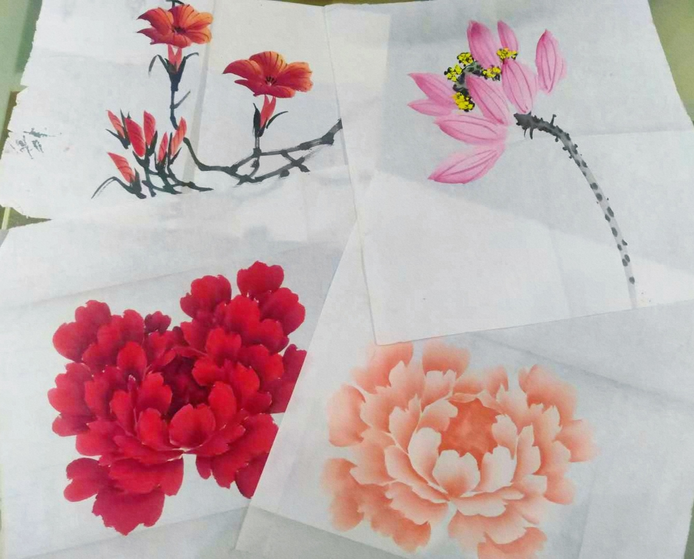

|
Experience
Research Experience
Research Intern, National Renewable Energy Laboratory (NREL), Jun. 2022-Sept. 2022.
Project: Hydrogen Systems for Performance-based Value Stacking. Mentor: Weijia Liu, Researcher at National Renewable Energy Laboratory.
Research Assistant, Smart Grid and Renewable Energy Laboratory at Tsinghua-Berkeley Shenzhen Institute (TBSI), Sept. 2018-Jun. 2020.
Projects: State Grid Technology Project (201913263A); National Key Research & Development Project of China (2016YFB0901300); Basic Disciplines Distribution Project of Shenzhen Commission (GDKJXM20161879); China Southern Grid Technology Project (ZBKJXM20180209). Mentor: Hongbin Sun, Professor of Tsinghua University, IEEE Fellow. Mentor: Xinwei Shen, Assistant Professor of Tsinghua University, IEEE Senior Member.
Research Assistant, Electrical and Power Electronics Research Center at Wuhan University, Jun. 2016-Oct. 2017.
Projects: Research on Wireless Power Supply Technology Based on Coupled Magnetic Resonance and Power Development of Intelligent Patrol Robots in the Substation. Mentor: Junhua Wang, Professor of Wuhan University.
Teaching Experience
Presentation
Skills & Others
|
 |
Experience with Python, Matlab, R, Julia, C++, etc.
Worked as a volunteer at Perkins School for the Blind.
Learned Chinese paintings for five years and passed Chinese Calligraphy and Painting Test (CCPT) Level 9.
|
|